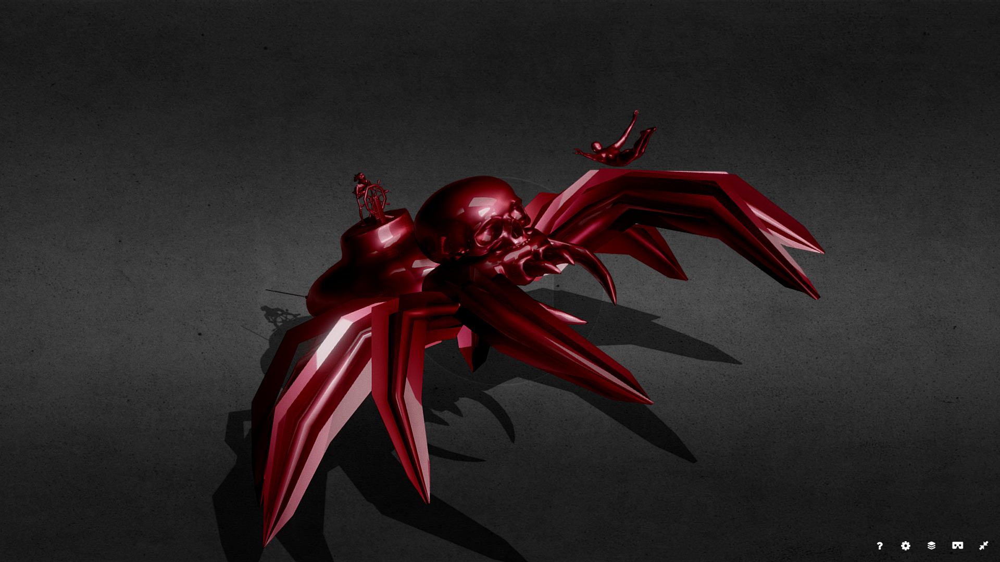
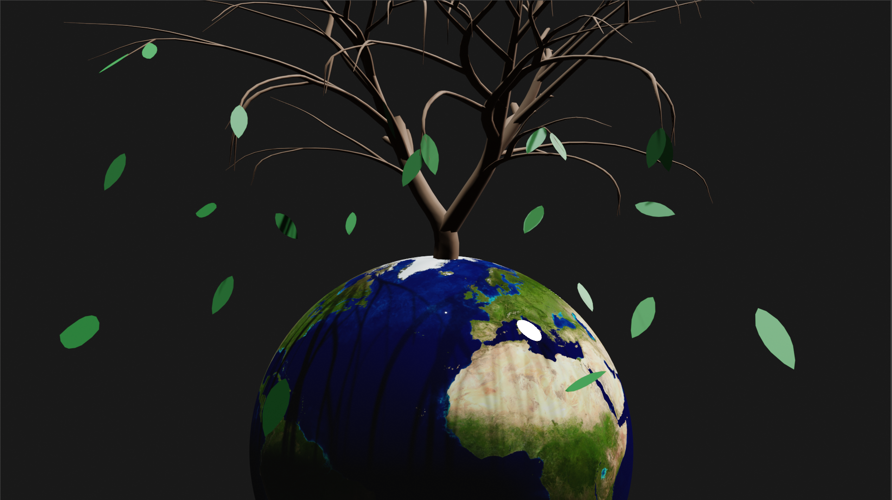

Moonlight
Medium: 3D Model
Description - This 3D model is a simple yet serene environment, where the moon shines, it becomes a time of rest after a long and restless day.
Diving Into Your Fears
Medium: 3D Model
Description - The creature is meant to provoke fear, specifically arachnophonia, testing whether you would take the dive and face your fears.
The Marble Course
Medium: 3D Animation
Description - An animated marble course created through blender.
Withering Earth
Medium: 3D Model
Description - This is a 3D model created in blender of an abstract representation of the earth slowly withering away due to pollution.
Zen Garden
Medium: 3D Animation
Description - This is a 3D animation of a mini zen garden, where the camera follows the butterfly as it flutters around the scene.